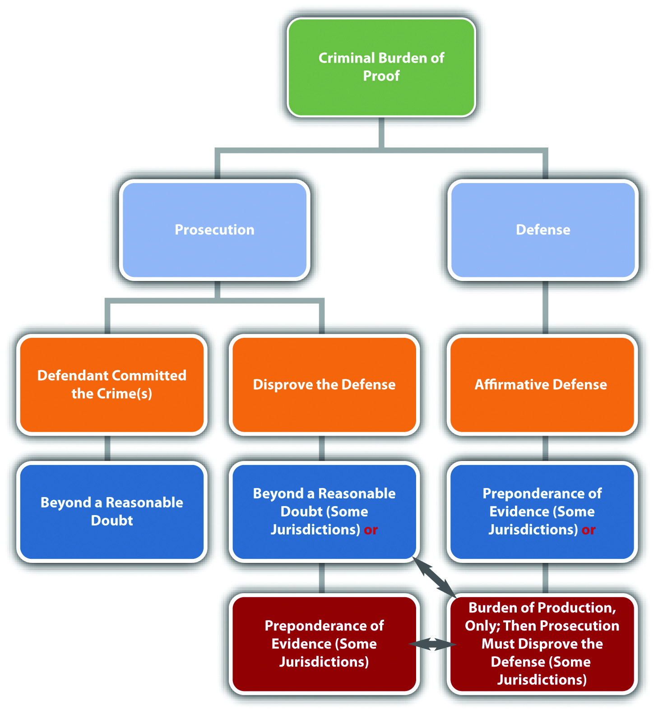

The key to the success of a civil or criminal trial is meeting the burden of proofAn obligation to prove a disputed charge, allegation, or defense.. A failure to meet the burden of proof is also a common ground for appeal. In this section, you learn the burden of proof for the plaintiff, prosecution, and defendant. You also are introduced to different classifications of evidence and evidentiary rules that can change the outcome of the trial.
The burden of proof is a party’s responsibility to prove a disputed charge, allegation, or defense.Yourdictionary.com, “Definition of Burden of Proof,” accessed September 26, 2010, http://www.yourdictionary.com/burden-of-proof. The burden of proof has two components: the burden of productionThe duty to present evidence to the trier of fact. and the burden of persuasionThe duty to convince the trier of fact to a certain standard.. The burden of production is the obligation to present evidence to the judge or jury. The burden of persuasion is the duty to convince the judge or jury to a certain standard, such as beyond a reasonable doubtThe burden of proof in a criminal case, which must be enough compelling evidence to overcome the defendant’s presumption of innocence., which is defined shortly. This standard is simply a measuring point and is determined by examining the quantity and quality of the evidence presented. “Meeting the burden of proof” means that a party has introduced enough compelling evidence to reach the standard defined in the burden of persuasion.
The plaintiff or prosecutor generally has the burden of proving the case, including every element of it. The defendant often has the burden of proving any defense. The trier of fact determines whether a party met the burden of proof at trial. The trier of fact would be a judge in a nonjury or bench trialA trial where the trier of fact is a judge, rather than a jury.. In a criminal case, the trier of fact is almost always a jury because of the right to a jury trial in the Sixth Amendment. Jurors are not legal experts, so the judge explains the burden of proof in jury instructions, which are a common source of appeal.
Burdens of proof vary, depending on the type of case being tried. The plaintiff’s burden of proof in a civil case is called preponderance of evidenceThe burden of proof for the plaintiff and defendant in a civil trial, and for some defenses in a criminal prosecution, which is enough evidence to prove that it is more likely than not that the party should prevail.. Preponderance of evidence requires the plaintiff to introduce slightly more or slightly better evidence than the defense. This can be as low as 51 percent plaintiff to 49 percent defendant. When preponderance of evidence is the burden of proof, the judge or jury must be convinced that it is “more likely than not” that the defendant is liable for the plaintiff’s injuries. Preponderance of evidence is a fairly low standard, but the plaintiff must still produce more and better evidence than the defense. If the plaintiff offers evidence of questionable quality, the judge or jury can find that the burden of proof is not met and the plaintiff loses the case.
The defendant’s burden of proof when proving a defense in a civil case is also preponderance of evidence. For example, in the O. J. Simpson civil case discussed in Chapter 1 "Introduction to Criminal Law", O. J. Simpson failed to meet the burden of proving the defense of alibi. The defendant does not always have to prove a defense in a civil case. If the plaintiff does not meet the burden of proof, the defendant is victorious without having to present any evidence at all.
The prosecution’s burden of proof in a criminal case is the most challenging burden of proof in law; it is beyond a reasonable doubt. Judges have struggled with a definition for this burden of proof. As Chief Justice Shaw stated nearly a century ago,
[w]hat is reasonable doubt? It is a term often used, probably pretty well understood, but not easily defined. It is not mere possible doubt; because every thing relating to human affairs, and depending on moral evidence, is open to some possible or imaginary doubt. It is that state of the case, which, after the entire comparison and consideration of all the evidence, leaves the minds of jurors in that condition that they cannot say they feel an abiding conviction, to a moral certainty, of the truth of the charge.Commonwealth v. Webster, 59 Mass. 295, 320 (1850), accessed September 26, 2010, http://masscases.com/cases/sjc/59/59mass295.html.
In general, the prosecution’s evidence must overcome the defendant’s presumption of innocenceThe trier of fact must begin a criminal trial concluding that the defendant is innocent., which the Constitution guarantees as due process of law.In re Winship, 397 U.S. 358 (1970), accessed September 26, 2010, http://www.law.cornell.edu/supct/html/historics/USSC_CR_0397_0358_ZO.html. This fulfills the policy of criminal prosecutions, which is to punish the guilty, not the innocent. If even a slight chance exists that the defendant is innocent, the case most likely lacks convincing and credible evidence, and the trier of fact should acquit the defendant.
States vary as to their requirements for the defendant’s burden of proof when asserting a defense in a criminal prosecution.Findlaw.com, “The Insanity Defense among the States,” findlaw.com website, accessed October 1, 2010, http://criminal.findlaw.com/crimes/more-criminal-topics/insanity-defense/the-insanity-defense-among-the-states.html. Different defenses also have different burdens of proof, as is discussed in detail in Chapter 5 "Criminal Defenses, Part 1" and Chapter 6 "Criminal Defenses, Part 2". Some states require the defendant to meet the burden of production, but require the prosecution to thereafter meet the burden of persuasion, disproving the defense to a preponderance of evidence or, in some states, beyond a reasonable doubt. Other states require the defendant to meet the burden of production and the burden of persuasion. In these states, the defendant’s standard is typically preponderance of evidence, not beyond a reasonable doubt. The defendant does not always have to prove a defense in a criminal prosecution. If the prosecution does not meet the burden of proof, the defendant is acquitted without having to present any evidence at all.
Ann is on trial for first-degree murder. The only key piece of evidence in Ann’s trial is the murder weapon, which was discovered in Ann’s dresser drawer during a law enforcement search. Before Ann’s trial, the defense makes a motion to suppress the murder weapon evidence because the search warrant in Ann’s case was signed by a judge who was inebriated and mentally incompetent. The defense is successful with this motion, and the judge rules that the murder weapon is inadmissible at trial. The prosecution decides to proceed anyway. If there is no other convincing and credible evidence of Ann’s guilt, Ann does not need to put on a defense in this case. The prosecution will fail to meet the burden of proof and Ann will be acquitted.
Figure 2.8 Diagram of the Criminal Burden of Proof
Parties can use two tools to help meet the burden of proof: inferenceA conclusion the trier of fact may make. and presumptionA conclusion the trier of fact must make.. Jury instructions can include inferences and presumptions and are often instrumental in the successful outcome of a case.
An inference is a conclusion that the judge or jury may make under the circumstances. An inference is never mandatory but is a choice. For example, if the prosecution proves that the defendant punched the victim in the face after screaming, “I hate you!” the judge or jury can infer that the punch was thrown intentionally.
A presumption is a conclusion that the judge or jury must make under the circumstances. As stated previously, all criminal defendants are presumed innocent. Thus the judge or jury must begin any criminal trial concluding that the defendant is not guilty.
Presumptions can be rebuttableCan be overcome with evidence. or irrebuttableCannot be overcome with evidence.. A party can disprove a rebuttable presumption. The prosecution can rebut the presumption of innocence with evidence proving beyond a reasonable doubt that the defendant is guilty. An irrebuttable presumption is irrefutable and cannot be disproved. In some jurisdictions, it is an irrebuttable presumption that children under the age of seven are incapable of forming criminal intent. Thus in these jurisdictions children under the age of seven cannot be criminally prosecuted (although they may be subject to a juvenile adjudication proceeding).
Two primary classifications are used for evidence: circumstantial evidenceA type of evidence that indirectly proves a fact. or direct evidenceA type of evidence that directly proves a fact..
Circumstantial evidence indirectly proves a fact. Fingerprint evidence is usually circumstantial. A defendant’s fingerprint at the scene of the crime directly proves that the defendant placed a finger at that location. It indirectly proves that because the defendant was present at the scene and placed a finger there, the defendant committed the crime. Common examples of circumstantial evidence are fingerprint evidence, DNA evidence, and blood evidence. Criminal cases relying on circumstantial evidence are more difficult for the prosecution because circumstantial evidence leaves room for doubt in a judge’s or juror’s mind. However, circumstantial evidence such as DNA evidence can be very reliable and compelling, so the prosecution can and often does meet the burden of proof using only circumstantial evidence.
Direct evidence directly proves a fact. For example, eyewitness testimony is often direct evidence. An eyewitness testifying that he or she saw the defendant commit the crime directly proves that the defendant committed the crime. Common examples of direct evidence are eyewitness testimony, a defendant’s confession, or a video or photograph of the defendant committing the crime. Criminal cases relying on direct evidence are easier to prove because there is less potential for reasonable doubt. However, direct evidence can be unreliable and is not necessarily preferable to circumstantial evidence. If an eyewitness is impeachedWhen a witness is made to appear untruthful., which means he or she loses credibility, the witness’s testimony lacks the evidentiary value of reliable circumstantial evidence such as DNA evidence.
Table 2.2 Comparison of Circumstantial and Direct Evidence in a Burglary Case
| Evidence | Circumstantial | Direct |
|---|---|---|
| Fiber from the defendant’s coat found in a residence that has been burglarized | Yes | No—directly proves presence at the scene, not that the defendant committed burglary |
| GPS evidence indicating the defendant drove to the burglarized residence | Yes | No—same explanation as fiber evidence |
| Testimony from an eyewitness that she saw the defendant go into the backyard of the burglarized residence | Yes | No—could prove trespassing because it directly proves presence at the scene, but it does not directly prove burglary |
| Surveillance camera footage of the defendant purchasing burglar tools | Yes | No—does not directly prove they were used on the residence |
| Cell phone photograph of the defendant burglarizing the residence | No | Yes—directly proves that the defendant committed the crime |
| Witness testimony that the defendant confessed to burglarizing the residence | No | Yes—directly proves that the defendant committed the crime |
| Pawn shop receipt found in the defendant’s pocket for items stolen from the residence | Yes | No—directly proves that the items were pawned, not stolen |
Casey Anthony Verdict: Found Not Guilty of Murder
In this video, the jury foreperson in the Casey Anthony trial reads the trial verdict. Casey Anthony was acquitted of murder, manslaughter, and child abuse of her daughter, Caylee Anthony. The evidence in the case was all circumstantial, and the coroner did not determine the cause of the victim’s death.David Lohr, “Casey Anthony Verdict: NOT GUILTY of First-Degree Murder,” Huffingtonpost.com website, accessed August 24, 2011, http://www.huffingtonpost.com/2011/07/05/casey-anthony-trial-verdict_n_890173.html#s303265&title=Casey_Anthony_Verdict.
The civil burden of proof is preponderance of evidence, for both the plaintiff and the defendant. The criminal burden of proof for the prosecution is beyond a reasonable doubt.
Answer the following questions. Check your answers using the answer key at the end of the chapter.